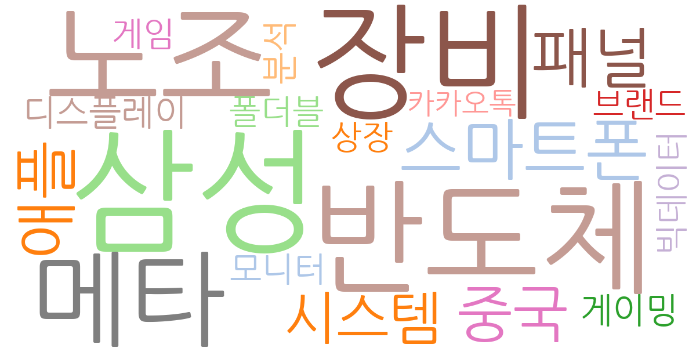
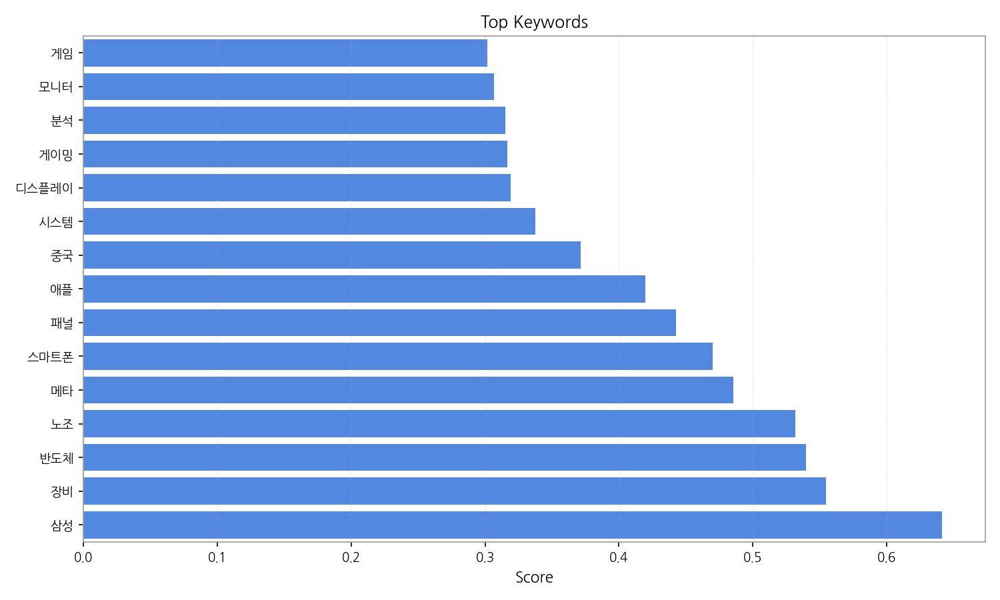
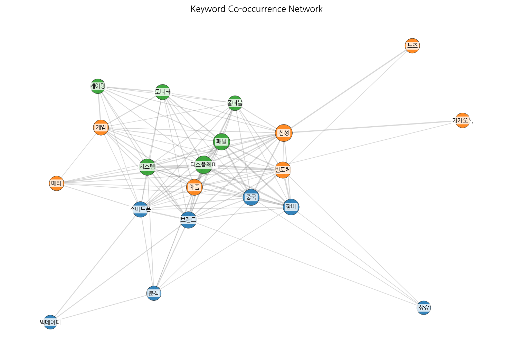
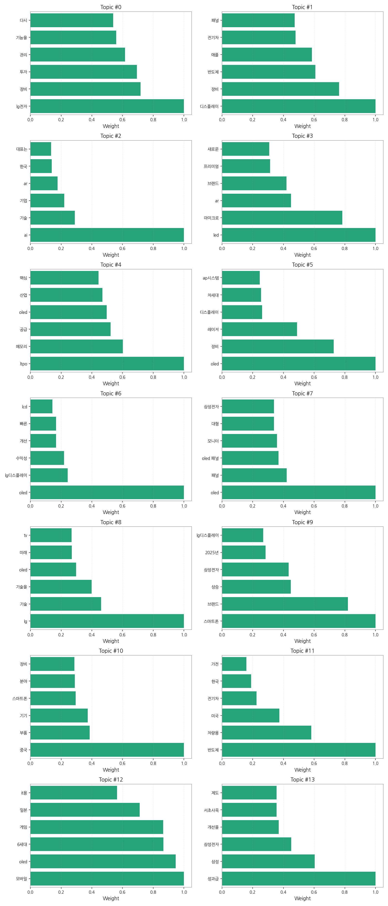
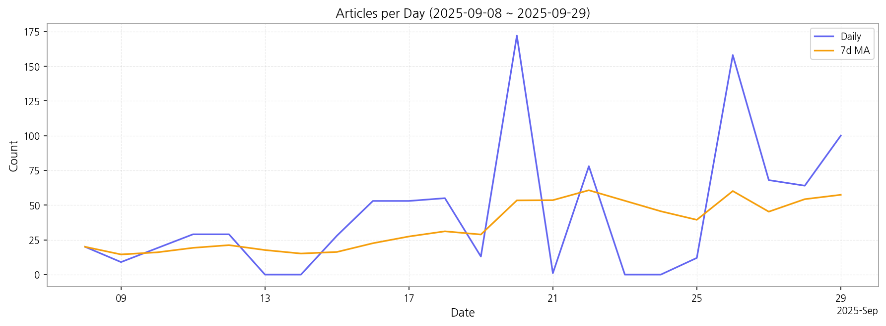

1. 핵심 맥락:
2. 최근 변화/스파이크:
3. 실무 인사이트:

| Rank | Keyword | Score |
|---|---|---|
| 1 | 삼성 | 0.641 |
| 2 | 장비 | 0.555 |
| 3 | 반도체 | 0.540 |
| 4 | 노조 | 0.532 |
| 5 | 메타 | 0.486 |
| 6 | 스마트폰 | 0.470 |
| 7 | 패널 | 0.443 |
| 8 | 애플 | 0.420 |
| 9 | 중국 | 0.372 |
| 10 | 시스템 | 0.338 |
| 11 | 디스플레이 | 0.319 |
| 12 | 게이밍 | 0.317 |
| 13 | 분석 | 0.315 |
| 14 | 모니터 | 0.307 |
| 15 | 게임 | 0.302 |




1. 핵심 맥락:
2. 최근 변화/스파이크:
3. 실무 인사이트:
| Idea | Target | Value Prop | Score |
|---|---|---|---|
| 메타버스 협업용 초고해상도 XR 디스플레이 | 북미 빅테크 기업 (메타버스 플랫폼 사업자, XR 기기 제조사) | 초고해상도 마이크로 OLED 기술 기반의 압도적인 몰입감 제공, 넓은 시야각 및 빠른 응답 속도로 현실감 극대화, 초경량 디자인으로 장시간 사용 편의성 향상, 사용자 맞춤형 디스플레이 설정 기능 제공 | 4.50 |
| 차량용 AR HUD (Augmented Reality Head-Up Display) 솔루션 | 글로벌 완성차 OEM (프리미엄 브랜드 중심) | 증강현실 기반의 직관적인 운전 정보 제공으로 안전 운전 지원, 사용자 맞춤형 인터페이스, 경쟁사 대비 넓은 시야각 및 고해상도 구현, 첨단운전자보조시스템(ADAS) 연동 강화 | 4.20 |
| AI 기반 디스플레이 공정 자동화 및 수율 예측 솔루션 | 국내외 디스플레이 제조사 | AI 기반의 실시간 공정 데이터 분석 및 이상 감지, 수율 예측 정확도 향상, 공정 자동화 및 최적화, 불량 발생 원인 분석 및 개선 방안 제시, 생산 비용 절감 및 생산성 향상 | 4.00 |
| IT 기기용 벤더블 OLED 패널 솔루션 | 글로벌 IT 기기 제조사 (노트북, 태블릿) | 사용자 맞춤형 폼팩터 변형으로 휴대성 및 사용성 극대화, 고화질 OLED 디스플레이로 몰입감 있는 시청 경험 제공, 내구성 강화 기술 적용으로 잦은 벤딩에도 안정적인 성능 유지, 차별화된 디자인으로 브랜드 이미지 제고 | 3.80 |
| 퀀텀닷 컬러 필터 기반 고색재현율 LCD | 글로벌 모니터 제조사 (게이밍, 전문가용) | OLED에 준하는 높은 색재현율 및 밝기 구현, LCD의 장점인 긴 수명 및 낮은 생산 비용 유지, 퀀텀닷 기술을 활용한 넓은 색 영역 표현, HDR(High Dynamic Range) 성능 극대화 | 3.50 |